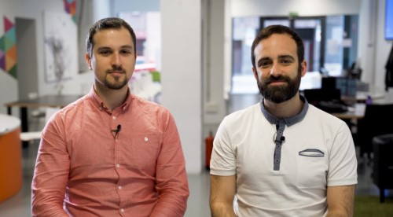

 Da el primer paso
Da el primer paso
La primera consulta es gratuita
Llámanos o escríbenos para una primera entrevista telefónica sin compromiso.
La primera entrevista telefónica es gratuita y sin compromiso. Llámanos o escríbenos.
Estamos en el Casco Viejo de Bilbao, a pocos pasos de la estación de metro Casco Viejo y del tranvía.
| Día | Horario |
|---|---|
| Lunes | 10:00 - 14:00 y 16:00 - 20:00 |
| Martes | 10:00 - 14:00 y 16:00 - 20:00 |
| Miércoles | 10:00 - 14:00 y 16:00 - 20:00 |
| Jueves | 10:00 - 14:00 y 16:00 - 20:00 |
| Viernes | 10:00 - 14:00 y 16:00 - 20:00 |
| Sábado | Cerrado |
| Domingo | Cerrado |

Da el primer paso
Llámanos o escríbenos para una primera entrevista telefónica sin compromiso.